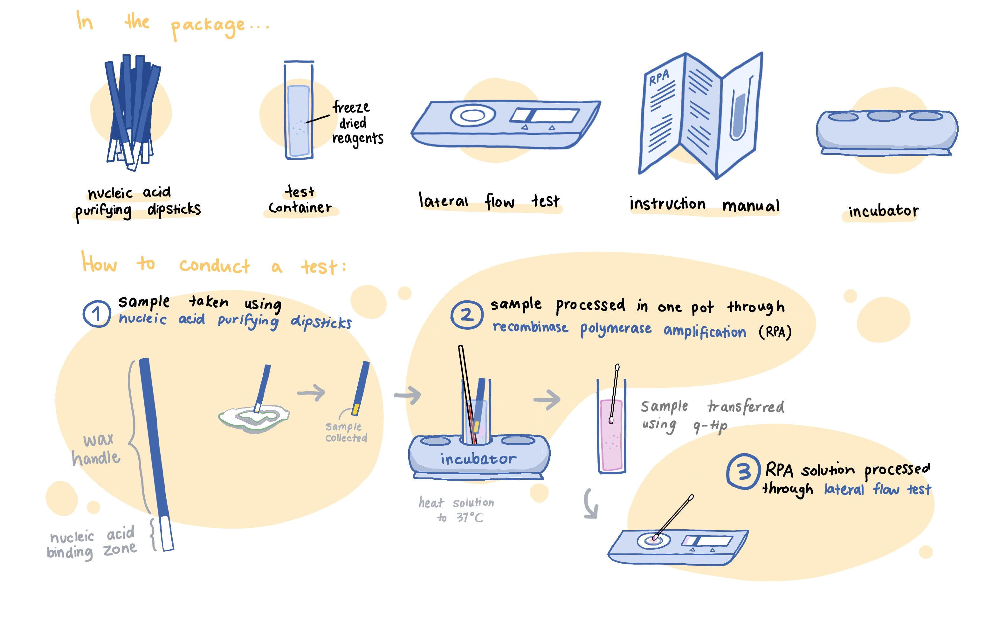

To combat the issue of inaccessibility in the oyster industry, we decided to develop a more affordable testing kit based on recombinase polymerase amplification (RPA). Our goal was to develop a kit that would be faster, easier to use, and would not require extensive technical experience or expensive machines.
While our kit has many possible users, we hope that it will be most beneficial to small-scale fishers in the greater Hong Kong area. Oyster farming in Hong Kong is at high risk of contamination by Vibrio. Our detection kit would allow fishers to detect the presence of such bacteria efficiently and at a reasonable price.
The secondary need our product attempts to fulfill is the large-scale consumer’s inability to detect oyster contamination themselves. Large scale consumers include restaurants and whole foods markets that source from large aquacultures. The most cost-effective way for our product to be used is to detect a single sample out of large batches of oysters, which is to say the average family is not our target consumer.
Other fisheries and shellfish industries could also use our product. The issue of contamination is not unique to raw oysters, so this product has excellent potential for expansion. We hope that our product could serve as an easy-to-use, simple, and straightforward method for end-users to test for contamination in seafood.
Vib-Check is a lateral flow strip test, with its design targeting efficiency, accuracy, and ease of use. First, a sample is collected from an oyster through vigorous swabbing with a dipstick. The sample will then be dipped in three separate solutions for DNA purification and finally reach our primary solution, which is a recombinase polymerase amplification (RPA) solution mixed with CRISPR Cas12a enzymes and unique reporter complexes. During the 30 minute wait, not only will the target Vibrio DNA signal being amplified (if present), the DNA will also activate latent CRISPR Cas12a enzymes. The activation of enzymes is crucial in a positive test scenario. Finally, a lateral flow dipstick is dipped into the reaction solution for approximately 10 seconds to ensure absorption of cleaved and uncleaved labelled reporters into the lateral flow test equipment. The results will show as colored bands. The entire process will take less than an hour.
Our kit is designed for contamination screening purposes. For each of our end-user groups, we anticipate some very specific circumstances in which our product will be used. Still, one of the most significant aspects of our kit is its flexibility in application.
Our kit is marketed for oyster detection because the local issue we are confronting is the decaying local oyster farming industry. However, our kit has applications for all kinds of seafood. Though our target demographics are seafood restaurants, oyster retail stores, and oyster farmers, we anticipate our product to be used for all sorts of testing. For example, scientists can conduct on-site screening for Vibrio pathogens with our kit if their purpose is to acquire contamination sample data, and oyster retail stores and oyster farmers can use our kit to screen batches of produce by strategically sampling specific products of a batch, as our kit is incredibly cheap, producers can minimize profit losses.
Another application of our product is its versatility and application for all kinds of seafood. Though the immediate problem we are trying to solve is the contamination of local oysters, we have kept the scope of the seafood industry in mind and designed our kit to be capable of detecting Vibrio in all seafood. However, the concept behind our kit is much greater than simply screening applications across seafood varieties. Our kit concept can actually be modified easily to screen anything, including Viruses and other Bacteria. The reason for this convenient modification lies in the amplification technology we have employed and the major privilege that accompanies this type of amplification.
As documented in the Description Page, our gRNA design lacks a PAM site. The PAM site is a short codon segment within the target genome that assists in unwinding DNA double helix for checking gRNA compatibility. Since RPA possesses a single strand phase in its amplification process, CRISPR Cas12a enzymes can still activate for the single strand phase of amplification regardless of the presence of a PAM site. Considering this fact, many viruses simply could not be detected efficiently due to a lack of a PAM site in the important coding regions. However, if the PAM sequence is left out of consideration, the options for complementary gRNA increases tremendously. This lifts a restriction that otherwise would have made detecting viruses extremely difficult, just to name an example.
Premarket certifications are one of the most critical steps for manufacturing and designing point-of-care tests. With the rise of the COVID pandemic, global biotech enterprises quickly swapped their focus on improving or developing new point-of-care (POC) detection tests. As a result, regulatory bodies, such as the FDA, refined their detection device premarket approvals. As there was a surge of novel devices and unique applications of technology appearing in the POC industry, regulatory bodies ensured that only the devices guaranteed with high enough accuracy could be marketed.
Despite the standards being raised, the method for acquiring premarket approval has largely remained the same, with the company in question submitting large quantities of data and screening results to the FDA for approval.
After extensive research, our team has concluded that when our detection kit has reached its final stages of development, premarket approval will likely not be required, as POC devices belong to PMA Class I or II. Class I and II devices are devices that generally will not directly cause harm if misused. Where machines like implantable pacemakers are classified as Class III due to the scope of harm that could result from a malfunction, POC screening tools are Class I and will only cause as much damage as the substrate it is screening for.
Although Class I and II devices do not require PMA, some Class I and most Class II devices are still required to complete the 510(k) requirements. According to the FDA, 510(k) premarket submissions are “based on the concept of substantial equivalence (SE) to a legally marketed device, also referred to as a predicate.” Due to the lack of an established industry for Vibrio screening devices, we could not find very similar products. Our method of searching for similar devices consisted of checking FDA PMA or 510(k) submission databases for any device titles with Vibrio in their name, as well as other closely related keywords, including Lateral Flow Assay. We were unable to find anything within the databases. Given the circumstance, two routes can be taken to determine the closest predicate outside of Vibrio-screening POC devices, that is, any other devices used to perform Vibrio detection or other POC devices used to screen for other species of bacteria.
However, some Class II devices are automatically exempt from 510(k) requirements: if they have received a formal review and have been specifically exempted if they belong to a class of devices called preamendment devices. Preamendment devices are devices produced before May 28, 1976. Or if they belong to specific classes of devices that have been exempted. This is, however, clearly inapplicable to our product kit. After reviewing similar LFA-POC devices, such as the Optium Point-Of-Care Blood Glucose Test Strips, we have concluded that our device very well may require a 510(k) submission, as the Blood Glucose Test Strips product is classified as PMA Class II, and was not exempted from a 510(k). Seeing as how our device handles a reagent significantly more hazardous than blood, we anticipate a 510(k) submission will be required.
In conclusion, a PMA will not be required, but a 510(k) will have to be submitted, and the data submitted will likely have to be comparable to that of other similar LFA–POC devices used in the detection of other pathogenic bacteria for our kit to pass market approval.
1. “510(k) Premarket Notification.” U.S. Food and Drug Administration, FDA, 18 Oct. 2021, www.accessdata.fda.gov/scripts/cdrh/cfdocs/cfPMN/pmn.cfm.
2. Center for Devices and Radiological Health. “Class I / II Exemptions.” U.S. Food and Drug Administration, FDA, 1 July 2019, www.fda.gov/medical-devices/classify-your-medical-device/class-i-ii-exemptions.
3.Center for Devices and Radiological Health. “Learn If a Medical Device Has Been Cleared by FDA for Marketing.” U.S. Food and Drug Administration, FDA, 29 Dec. 2017, www.fda.gov/medical-devices/consumers-medical-devices/learn-if-medical-device-has-been-cleared-fda-marketing.
4.Center for Devices and Radiological Health. “Preamendment Status.” U.S. Food and Drug Administration, FDA, 15 Nov. 2017, www.fda.gov/medical-devices/quality-and-compliance-medical-devices/preamendment-status.
5. Center for Devices and Radiological Health. “Premarket Approval (PMA).” U.S. Food and Drug Administration, FDA, 16 May 2019, www.fda.gov/medical-devices/premarket-submissions/premarket-approval-pma.
6. “Commercial Laboratory Tests and FDA Approval.” Lab Tests Online, 4 Mar. 2021, labtestsonline.org/articles/commercial-tests-fda-approval.
7. Jin, Jill. “FDA Authorization of Medical Devices.” JAMA, JAMA Network, 22 Jan. 2014, jamanetwork.com/journals/jama/fullarticle/1817798.
8. “The Life Cycle of Oysters in Aquaculture.” Element Seafood, 14 June 2016, www.elementseafood.com/the-life-cycle-of-oysters-in-aquaculture/.
9.“Point of Care/Rapid Diagnostics Market by Product.” Markets and Markets, Feb. 2021, www.marketsandmarkets.com/Market-Reports/point-of-care-diagnostic-market-106829185.html?gclid=CjwKCAjwt8uGBhBAEiwAayu_9e2RE3jUPRWyYnPpmPs2wAD8KFm2tFYlvpvB5xlmIC8Cr5Fij_WwdRoC60cQAvD_BwE.
10. Producers of Sun-Dried “Golden Oysters” from Lau Fau Shan, Historically a Delicacy, Have Been Hit Hard by Shrinking Catches and Other Problems. Photo: K. Y. Cheng. 13 Feb. 2021.